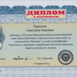
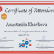
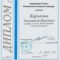

Четко разработанный и расписанный по занятиям план каждого учебного курса с наглядными материалами и тестированием по каждой теме в формате ЗНО.
Ничего лишнего – все в соответствии с программой УЦОЯО + интересные практические знания и навыки
Харькова Анастасия Павловна Руководитель компании «NATURE Tutor Group»
Автор и преподаватель курсов «Биология. ЗНО», «Химия. ЗНО», «Мозговой штурм» перед ЗНО» (биология, химия), «Летняя школа-практика по биохимии», «Органическая химия за лето», индивидуальные занятия по биологии и химииОбразование Киевский национальный университет имени Тараса Шевченко, учебно-научный центр «Институт биологии», магистр биологии (2013 г., диплом с отличием), специальность «биохимия», квалификация – биотехнолог, научный сотрудник в области биологии, преподаватель высших учебных заведений.
Деятельность и достижения Участник Всеукраинского биохимического конгресса (Киев, 2014 г.); участник Форума молодых ученых Федерации Европейских биохимических сообществ (г. Париж, Франция, 2014 г.); член Украинского биохимического общества (с 2013 г.); победитель Всеукраинской олимпиады по биологии (2007 г.)
Опыт педагогической деятельности с 2008 г.
Средний балл ЗНО 189
Дипломы и сертификаты
  Федорук Светлана Викторовна
Автор и преподаватель курсов «Математика ЗНО», «Мозговой штурм» перед ЗНО» (математика), «Устный счет в химии», «Математика за лето»Образование Киевский национальный университет имени Тараса Шевченко, механико-математический факультет, магистр биологии (2015 г., диплом с отличием), специальность «математика», квалификация – математик, преподаватель высших учебных заведений, младший научный сотрудник (математика)
Опыт педагогической деятельности с 2010 г.
Средний балл ЗНО 188
Дипломы и сертификаты
Рыбак Мария Юрьевна
Автор и преподаватель курсов «Биология на английском», «Химия на английском», индивидуальные занятия по английскому языкуОбразование Киевский национальный университет имени Тараса Шевченко, учебно-научный центр «Институт биологии», магистр биологии (2013 г., диплом с отличием), специальность «биохимия», квалификация – молекулярный биолог, научный сотрудник в области биологии, преподаватель высших учебных заведений
Деятельность и достижения International Conference of Young Scientists CYS-2015 (Kyiv, 2015); участник онлайн-семинаров по ресурсам Thomson Reuters для научных исследований (2015 г.); участник Всеукраинского биохимического конгресса (Киев, 2014 г.); International PhD symposium VIBes in Biosciences (Antwerp, Belgium, 2014); Statements of Accomplishment of the online-courses: «Programmed cell death» offered by Ludwig-Maximilians-Universität München (LMU) and «Writing in the Sciences» by Stanford University (USA, 2013); Сертификат об успешном окончании дистанционного курса от WIPO «Основы интеллектуальной собственности» (2013 г.); International Summer School on the «Dynamics of gene regulation, epigenetics and DNA damage response» (Mainz, Germany, 2013); Certificate of Advanced level of English (Green Forest School, 2011 г.)
Опыт педагогической деятельности с 2008 г.
Дипломы и сертификаты
Бандурко Владислава Васильевна
Автор и преподаватель курсов «География. ЗНО», «Биология. ЗНО», «Мозговой штурм» перед ЗНО» (география, биология), «Летняя школа-практика по биологии», индивидуальные занятия по географии и биологииОбразование Донецкий Национальный университет (г. Винница), специальность «экология, охрана окружающей среды и рациональное природопользование», магистр биологии
Деятельность и достижения Семинар «Green Thinking» в рамках проекта New Generation (2014 г.); Сертифицированный семинар GIZ «Инновации как формула роста» (2014 г.); организация работы Всеукраинской биологической школы «Від теорії до практики один крок» (2015 г.); менеджмент проекта по сохранению биоразнообразия, при поддержке Международной компании Heidelberg Cement в Украине (2014 г.); победитель (І место) Всеукраинского конкурса научных работ студентов МОН Украины (2014 г.); менеджмент проекта по сохранению биоразнообразия, осуществляемого эколого-культурным центром «Бахмат» при поддержке посольства королевства Нидерландов в Украине (2013 г.); победитель (І место) Всеукраинской олимпиады по биологии и экологии (2010 г.); участник Международной олимпиады по биологии (Южная Корея, 2010 г.)
Опыт педагогической деятельности с 2010 г.
Средний балл ЗНО 187
Дипломы и сертификаты